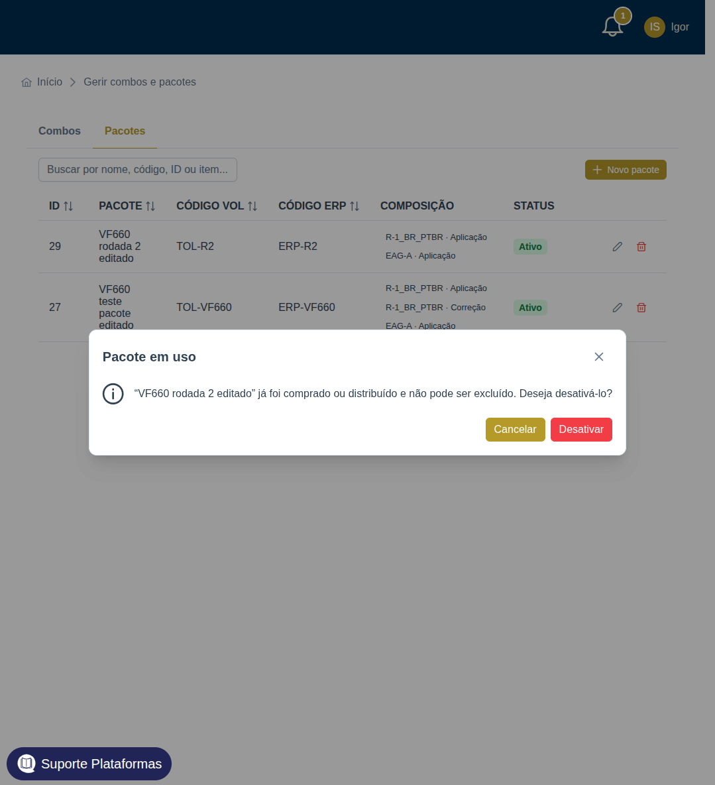
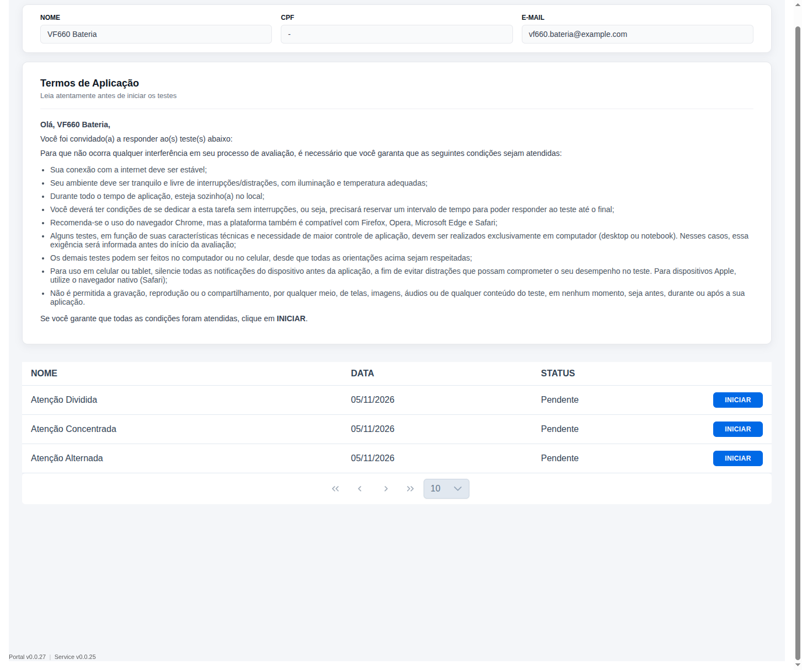

O 409 da exclusão de um pacote com movimentação agora inclui code: PACKAGE_HAS_TRANSACTIONS. A tela lê esse campo e abre o diálogo de desativar.

A tabela dessa página lia só questionnaires. No combo os testes vêm dentro de bundleProject.questionnaires. O link do COMBO_AOL chegava com a primeira lista vazia e a tela dizia "Não foram encontrados testes disponíveis."
A página agora junta os itens do combo nessa tabela. O nome de cada item também passa a vir preenchido: a busca do teste inclui os questionários do combo.
